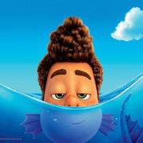

Tengo 14 años.
Soy un monstruo marino.
Soy expresivo, curioso, independiente, arriesgado, intrépido, de espíritu libre, valiente.
Vivía solo en una isla de Italia hasta que Massimo, el papá de Giulia, me dijo que me mude con él.
Soy amigo de Luca Paguro y Giulia Marcovaldo y ganamos la copa de Porto Rosso juntos.
Ayudo a Massimo a pescar.
En mi tiempo libre invento nuevas cosas con objetos usados.
Me gusta la Vespa, nadar, tomar helado y dormir abajo de las anchoas.
No me gustan los gatos.
Me cae mal Ercole y Bruno.
No se andar en bicicleta.
Vendí la Vespa para comprarle un boleto a Luca así podía ir a la escuela.
Mi pasta favorita es Trenette al pesto.
Mis frases favoritas son "Silenzio, Bruno!" y "Piacere, Girolamo Trombetta".